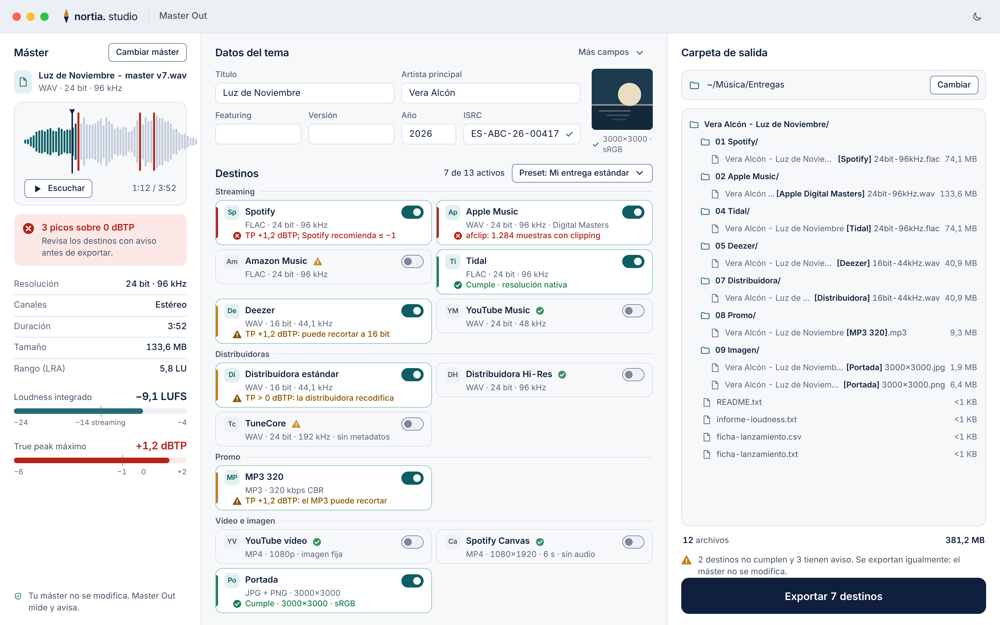
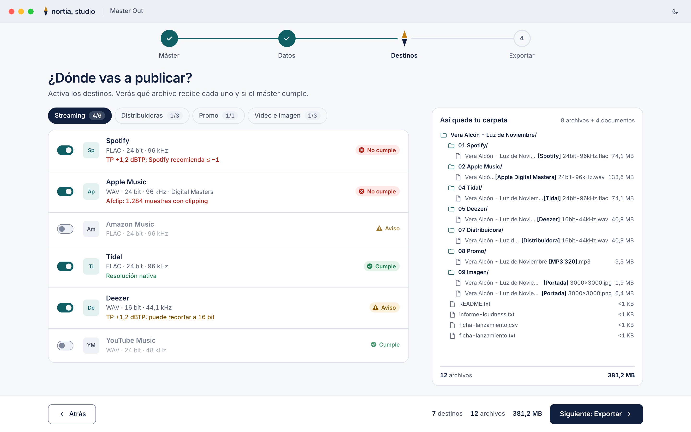
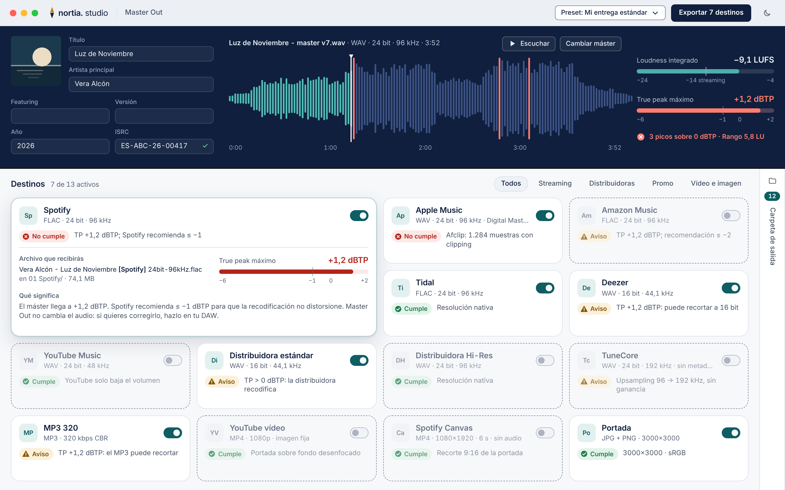

Tres columnas fijas: máster, datos y destinos, carpeta en vivo. Todo a la vista, ningún paso intermedio.

Cuatro pasos guiados con el norte marcado como marcador de progreso. Menos densidad, más acompañamiento.

Onda grande como cabecera y rejilla de destinos que se expanden. La carpeta vive en un cajón lateral.